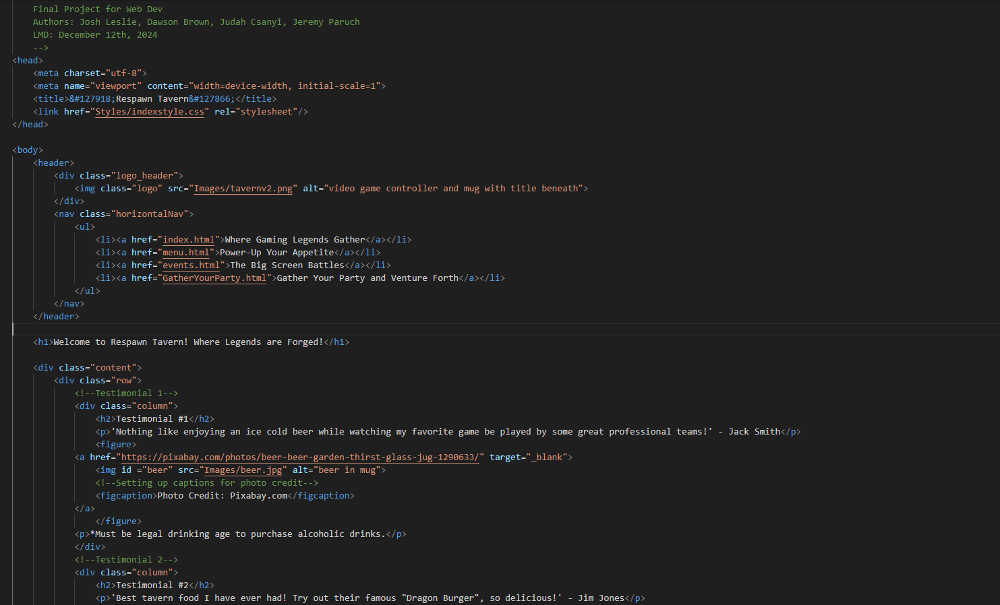

NSCC | IT Programming | Academic Year 2024–2025
My initial goal was to build a foundation in IT programming. As I've advanced, I've found a deep interest in system administration and web development. My updated goal is to become a well-rounded IT professional with a focus on backend development and IT infrastructure.
Object Oriented Programming: Created algorithms to solve logic problems in Java. (PROG 2007)
Web Development Project: Built a responsive website using HTML, CSS, and JavaScript. (WEBD 1000)
This year, I enhanced my problem-solving ability and deepened my understanding of computer systems. From scripting to managing servers, each course helped me gain real-world skills and confidence in my abilities as a future IT professional.